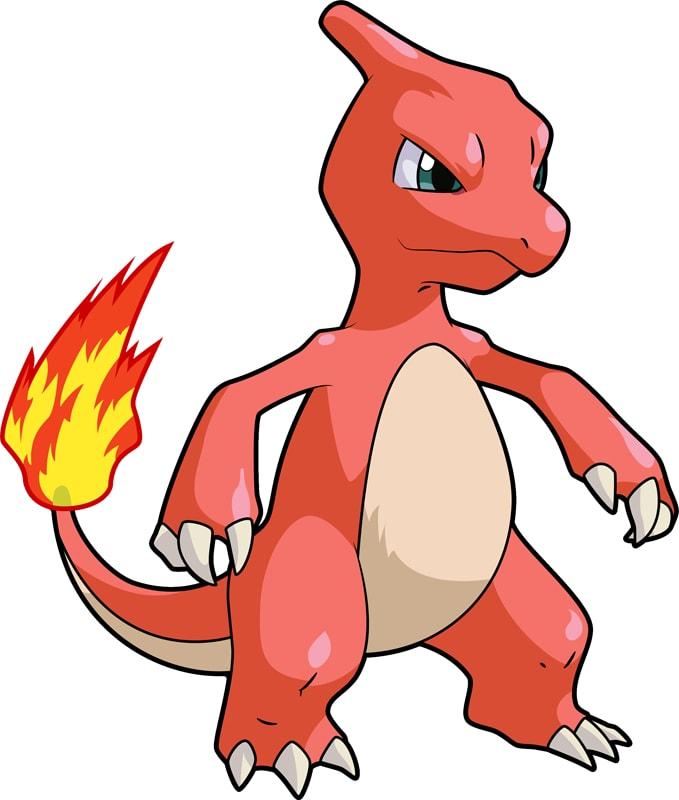

| Home | Introduction | Dictionary | Video | Map |
|  | |
| Type | Ability |
| Fire | Blaze |
| Height | Weight |
| 3'07" | 41.9 lbs |
Charmeleon is a bipedal, reptilian creature. It has bright-red scales and a cream underside. There is a horn-like protrusion on the back of its head, and it has narrow blue eyes and a long snout. It has relatively long arms with three sharp claws. Its short legs have feet with three claws and cream-colored soles. The tip of its long, powerful tail has a flame burning on it. The temperature rises to unbearable levels if Charmeleon swings its tail.
Charmeleon has a vicious nature and will constantly seek out opponents. Strong opponents excite this Pokémon, causing it to spout bluish-white flames that torch its surroundings. However, it will relax once it has won. It is rare in the wild, but it can be found in mountainous areas.